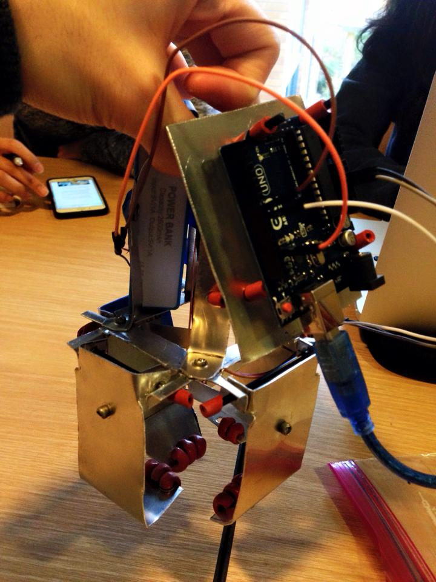
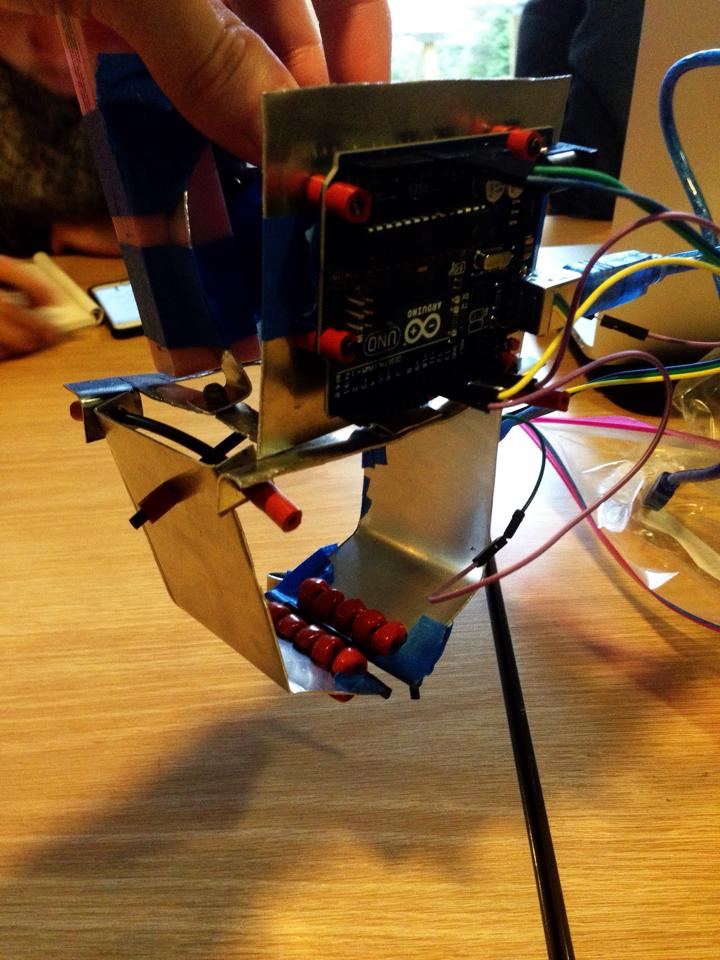
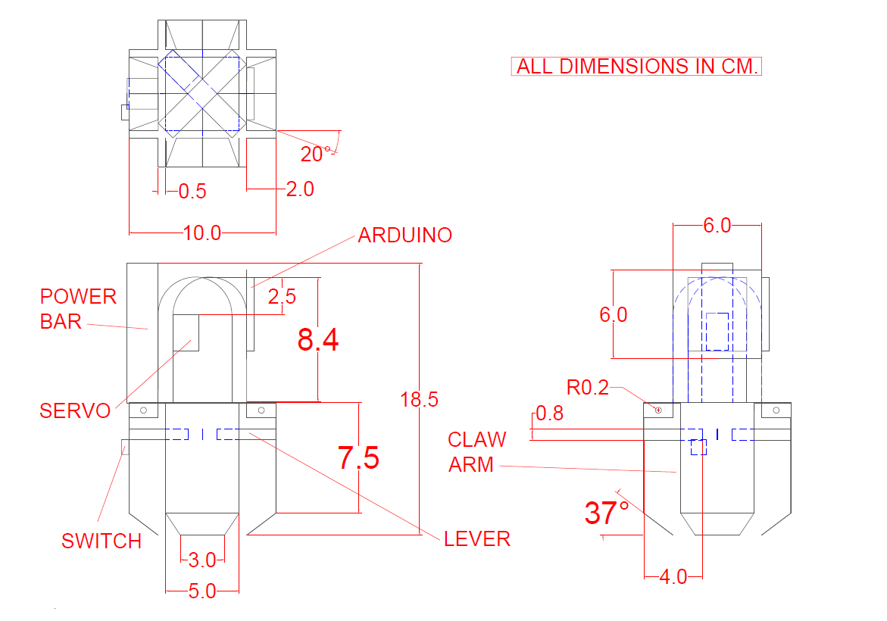

In this 1st year class project, I worked with four classmates to produce two Arduino-controlled robotic claws that could pick up and release objects. Our claws were built out of sheet metal using hand tools, which helped us appreciate both the difficulty and flexibility of realizing designs from scratch.
My role included:- Coordinating the team
- Prototyping the claws out of cardstock
- Constructing the claws
- Programming the claws via Arduino
- Drafting the final design on AutoCAD.
|  |
Claw #1: Quadro
The concept for this design was the one I pitched to our team; after testing, it was also the best of our designs. It features four fingers to grab objects, which are connected to a common Arduino-actuated servo motor. I built this claw's CLOSE/OPEN switch, hinge connections, and a large portion of its structure.
|
|  |
Claw #2: Duo
In order to experiment with a different claw type and have a back-up in case our first claw was damaged, we built a second claw with two fingers. I did not design this one, but I built its CLOSE/OPEN switch and hinge connections. |
|  |
Orthographic Drawing: Quadro
Using AutoCAD, I drafted a third angle projection of Quadro, the claw our team decided to submit for grading. |
|
|
Video: Claws in Action
Displayed are our two claws picking up a pair of lab goggles. (No sound) |